面向自主水面/水下航行器准静态 INS 对准的非正交约束优化On the Optimized Use of Non-Orthonormality Constraints for the Quasi-Static INS Alignment of Autonomous Underwater and Surface Vehicles
本日最直接的惯性导航与状态估计工作，涉及姿态初始化、偏置估计和 EKF 观测模型；与 GNSS/INS 融合链路高度相邻。
一句话工作总结
面向 INS 初始对准和偏置可观性的约束设计，对 GNSS/INS 或水下多传感器融合的初始化环节有直接参考价值。
摘要
论文优化 TRIAD 粗对准与粗偏置估计，并在零速更新扩展卡尔曼滤波中引入由 TRIAD 推导的非正交误差约束，将姿态误差与惯性传感器偏置直接联系起来。蒙特卡洛仿真和两种等级 IMU 的实验证明，误差与偏置估计可由分钟级加速到秒级，同时保持与传统方法相近的精度。
Inertial navigation systems are specialized navigation apparatuses that equip almost all autonomous underwater and surface vehicles. They require precise initial alignment, i.e., determination of their initial attitude, which is typically achieved: (a) in quasi-static conditions (whenever possible); and (b) in two stages: Coarse Alignment (CA), using methods like TRI-axis Attitude Determination (TRIAD), and Fine Alignment (FA), via Zero Velocity Update (ZVU)-based Extended Kalman Filtering (EKF). However, conventional methods suffer from slow convergence and limited bias estimability. In response, this paper introduces: (a) an optimized version of a recently proposed CA method, namely, TRIAD with Coarse Bias Estimation (TRIAD-CBE); and (b) a novel FA EKF observation model that incorporates Non-Orthonormality (NON) error constraints derived from TRIAD, directly linking these errors to the inertial sensor biases. As validated through extensive Monte Carlo (MC) simulations, as well as real-world experiments using two Inertial Measurement Units (IMUs) of different grades, our approaches substantially accelerate the convergence of misalignment and bias estimates (from minutes to seconds), while maintaining accuracy/precision comparable to traditional techniques.
中文解读摘录
- 中文名：RoboShape：面向隐私保护机器人感知的信息论点云表示
- 方向：点云表示、机器人感知、信息瓶颈、协同建图。
- 要点：在冻结 Sonata 编码器后加入信息论压缩头，同时保留目标理解信息并抑制敏感属性信息；报告嵌入体积缩小 87.5%、物体分类效用保留 98.7%，敏感属性预测下降 39.3%。
- 判断：对云端规划、协同建图和机器人感知数据传输有直接价值，但不是新的 SLAM 后端。
图表/页面预览
{kind=link}
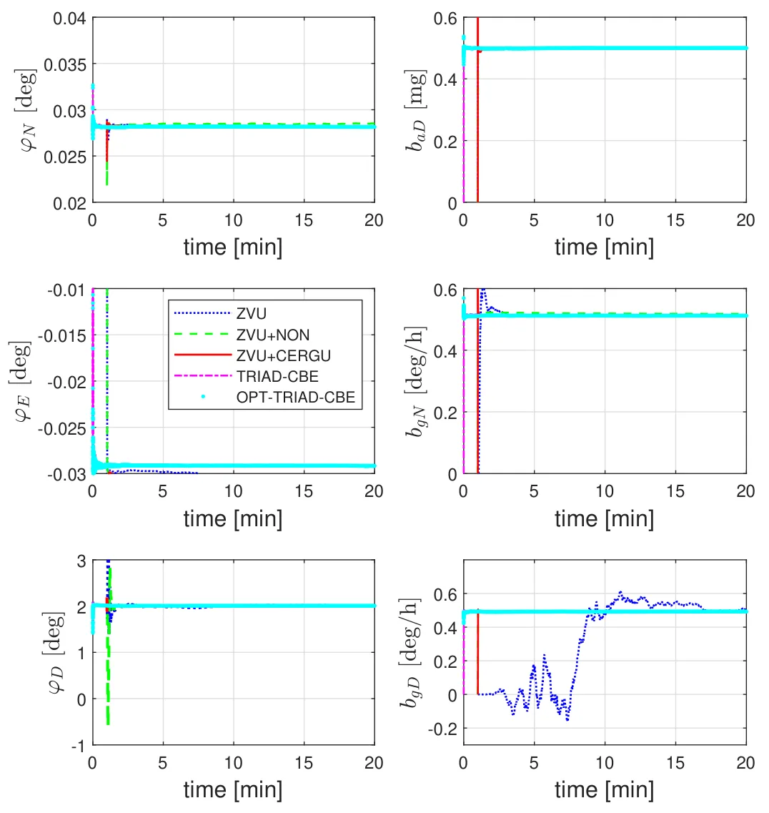
{kind=link}
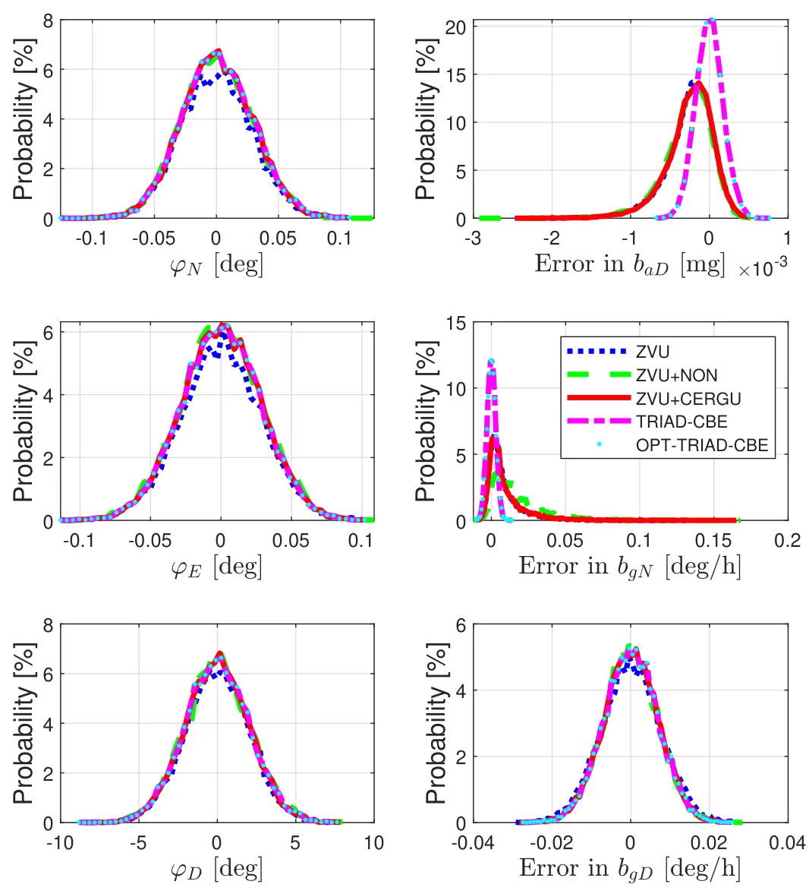
{kind=link}
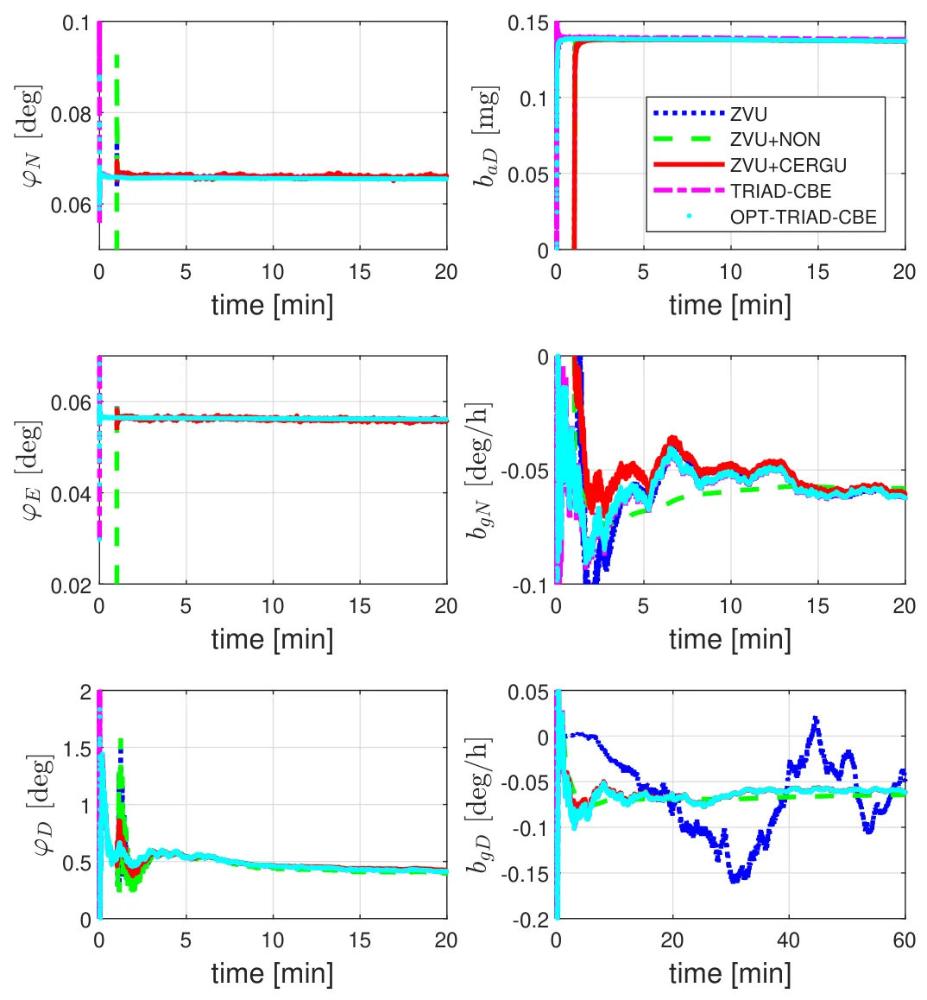
{kind=link}
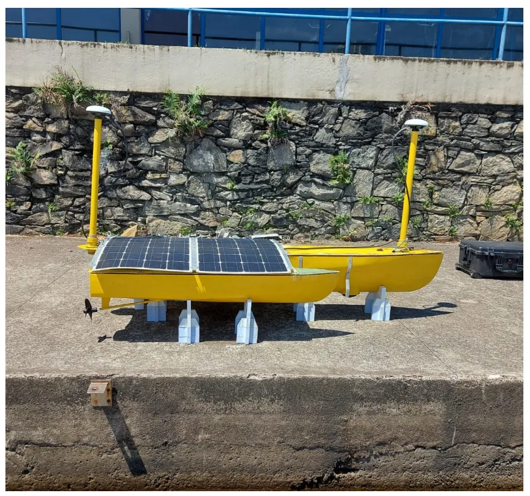
{kind=link}
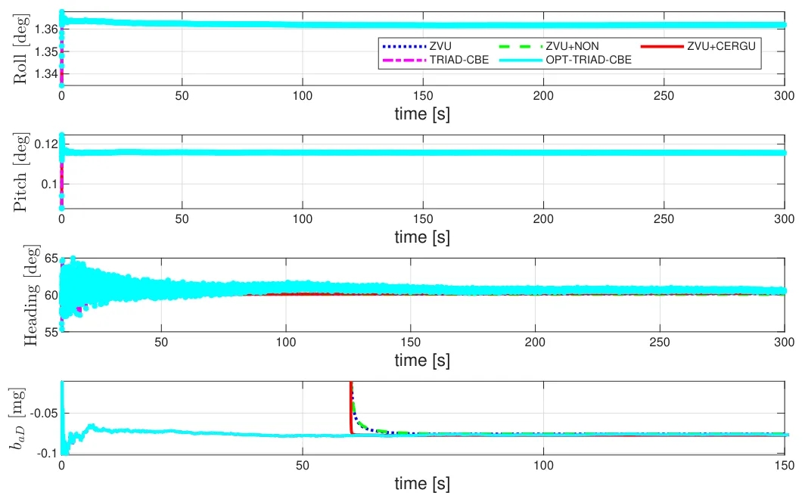
{kind=link}
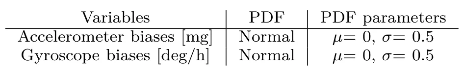
{kind=link}
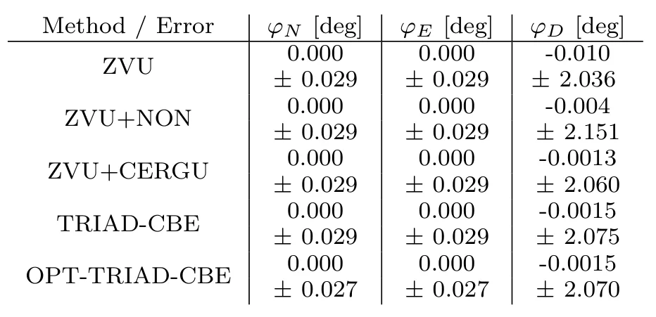
{kind=link}
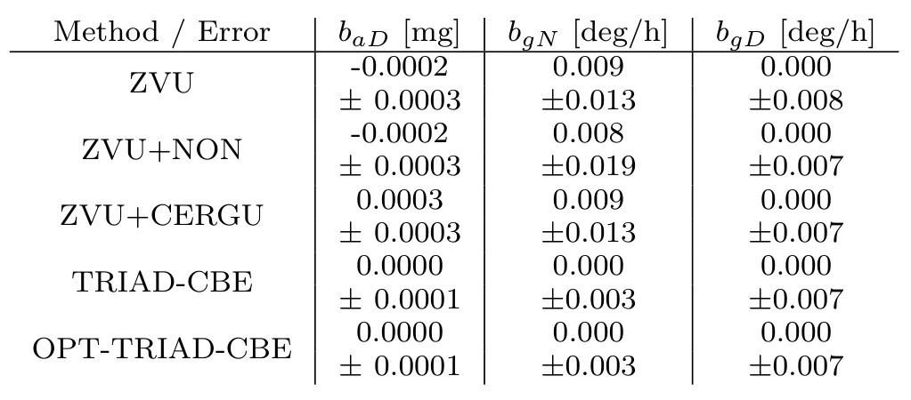
{kind=link}
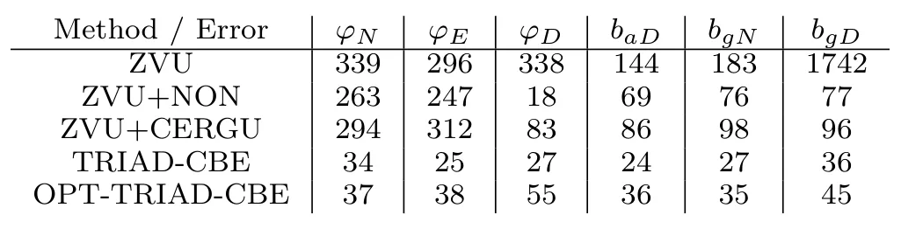
{kind=link}
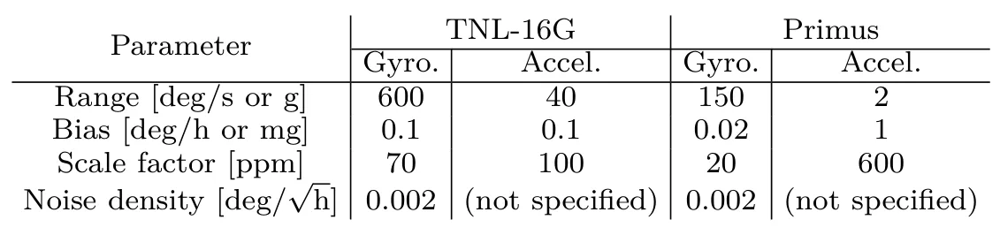
{kind=link}
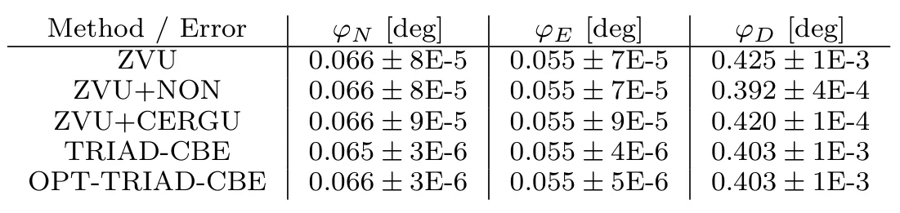